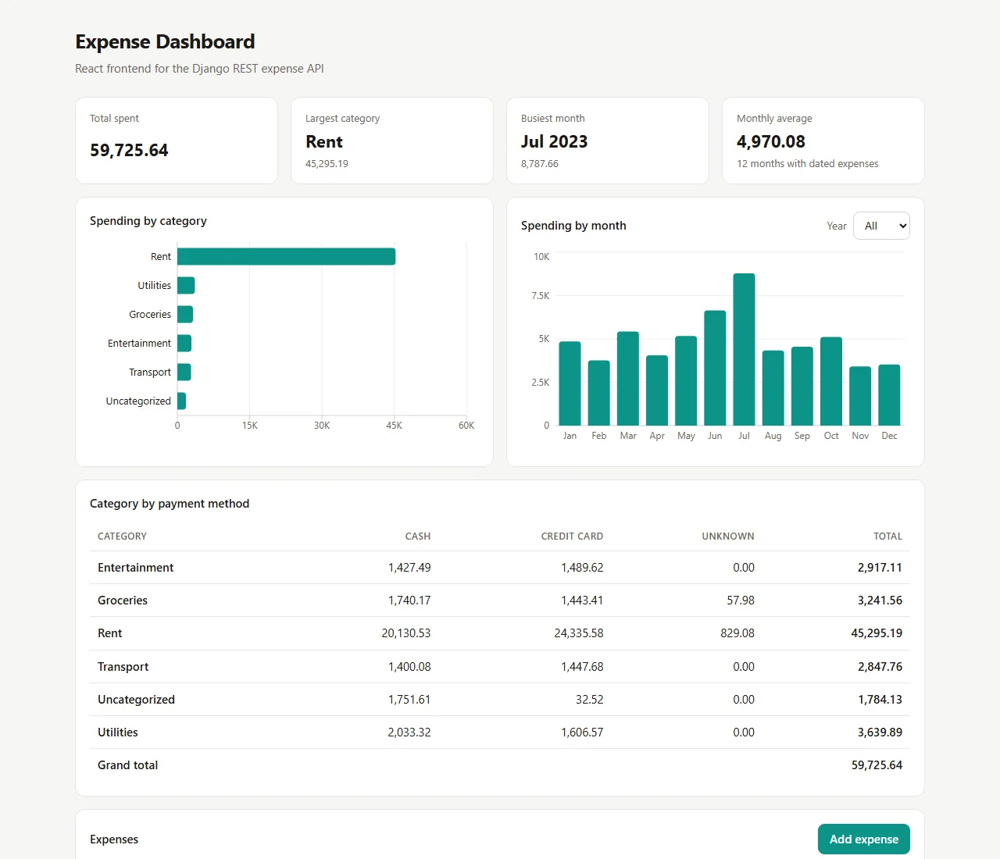

Expense Analysis: importing messy CSV data and reporting on it
A Django REST API that imports expense records from a CSV file, validates every row, and serves reports computed in the database, with a React and TypeScript dashboard and a small command-line report on top.
- My part
- All of it: API, import, reports, dashboard, tests, CI
- Backend
- Python, Django 5.1, Django REST Framework 3.15, SQLite
- Frontend
- React 18, TypeScript, Vite, Recharts
- Links
- Source on GitHub

01The problem
The input is a CSV file of 300 expenses. Some rows have missing values, and a real file can also have wrong ones: text in the amount column, an unknown category, a date that does not exist. The totals have to be exact, and loading the same file twice must not double the totals.
So the work was less about the endpoints and more about deciding what counts as valid data, where the arithmetic happens, and how errors reach the person who has to fix them.
02Decisions
- Reject the whole file if any row is wrong.
The import validates every row first and reports each bad one with its line number. Nothing is saved until the file is clean, because a half-imported file is harder to repair than a rejected one.
- Treat missing and wrong values differently.
A missing amount becomes
0.00, a missing category becomesUncategorized, a missing payment method becomesUnknown, and a missing date is kept empty so the row counts in category totals but not in monthly ones. A value that is present but invalid, such asamount=abc, is an error. - Make re-imports update, not duplicate.
Running the import again on the same file updates existing rows instead of adding new ones.
- Use
Decimal, not floats.Amounts are stored and summed as decimals, so totals have no floating-point rounding errors.
- Aggregate in the database.
The report endpoints use
SUM,GROUP BYand month truncation through the ORM rather than looping over rows in Python. - Show API validation errors next to the field.
The frontend's typed API client turns network failures and Django REST Framework error responses into messages, and the form places each field error beside its input.
- Avoid CORS in development.
Vite forwards
/api/*to Django, so the browser sees one origin. A separate API address can be set withVITE_API_URLat build time.
03Code
The monthly report, from API/expenses/reports.py. The grouping and the sum both run in the database:
def total_by_month(year=None):
queryset = Expense.objects.filter(expense_date__isnull=False)
if year:
queryset = queryset.filter(expense_date__year=year)
rows = (
queryset.annotate(month=TruncMonth('expense_date'))
.values('month')
.annotate(total=Sum('amount'))
.order_by('month')
)
return [{'month': row['month'].strftime('%Y-%m'), 'total': row['total']} for row in rows]A validation error from POST /expenses/ comes back per field, which is what the form displays:
{
"expense_type": ["\"Food\" is not a valid choice."],
"amount": ["Ensure this value is greater than or equal to 0."]
}04Tests
51 automated tests run on every push with GitHub Actions.
| Part | Tests | Tool |
|---|---|---|
| API, CSV import and reports | 19 | Django test runner |
| Command-line report | 7 | unittest |
| React components and API client | 25 | Vitest, React Testing Library |
05Limits
- The database is SQLite, which is enough for the sample data but not for several users writing at once.
- Serving the frontend from a different domain would need CORS headers on the API, which the project does not include yet.